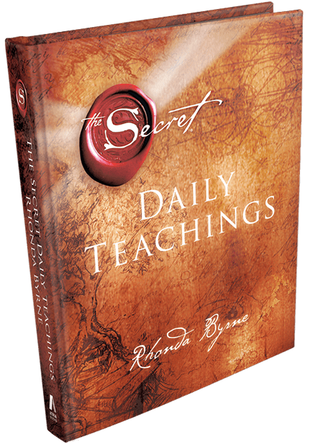

The Secret Daily Teachings

Following the revolutionary success of the blockbuster bestseller The Secret comes an inspirational
companion that offers a new way to bring joy and harmony to all aspects of life, every single day.
All around the world, The Secret is helping millions achieve the lives of their dreams. Now, with
The Secret Daily Teachings, Rhonda Byrne takes readers through the next vital steps in living The
Secret. With 365 brand new insights that build on powerful truths, Byrne illuminates facets of the
law of attraction that lead to more joy, abundance, and blessings—every single day of the year. This
beautifully designed book has removable pages so readers can share their favorite teachings or take
their most cherished inspirations with them as they go about the day. The Secret Daily Teachings
supports readers in harnessing the hidden, untapped power of the Universe within themselves.
Remember, as one of the daily teachings says, “No matter where you are, no matter how difficult
things may appear to be, you are always being moved toward magnificence. Always.”
 Since its release in November 2006, The Secret book has remained on the New York Times bestseller
list
for
190 weeks and was named by USA Today as one of the top 20-bestselling books of the past 15 years. In
January
of 2007, Rhonda appeared on the Oprah Winfrey Show with four teachers from The Secret film. In May
of
2007,
Rhonda Byrne was recognized as one of the world’s most influential people in TIME magazine’s “The
TIME
100:
The People Who Shape Our World”, and shortly afterwards appeared in Forbes’ “The Celebrity 100”
list.
Since its release in November 2006, The Secret book has remained on the New York Times bestseller
list
for
190 weeks and was named by USA Today as one of the top 20-bestselling books of the past 15 years. In
January
of 2007, Rhonda appeared on the Oprah Winfrey Show with four teachers from The Secret film. In May
of
2007,
Rhonda Byrne was recognized as one of the world’s most influential people in TIME magazine’s “The
TIME
100:
The People Who Shape Our World”, and shortly afterwards appeared in Forbes’ “The Celebrity 100”
list.
 In 2010, Rhonda continued her work with the book The Power, the second book in The Secret Book
Series,
which
immediately became another New York Times bestseller. The Power is now available in 43 languages.
The
third
book in The Secret Book Series, The Magic, was released in 2012, and her latest book, Hero, the
fourth
in
The Secret Book Series, was released in 2013. Also released in 2013 was The Secret Daily Teachings
in a
brand new hardcover book edition.
In 2010, Rhonda continued her work with the book The Power, the second book in The Secret Book
Series,
which
immediately became another New York Times bestseller. The Power is now available in 43 languages.
The
third
book in The Secret Book Series, The Magic, was released in 2012, and her latest book, Hero, the
fourth
in
The Secret Book Series, was released in 2013. Also released in 2013 was The Secret Daily Teachings
in a
brand new hardcover book edition.
Follow Us On